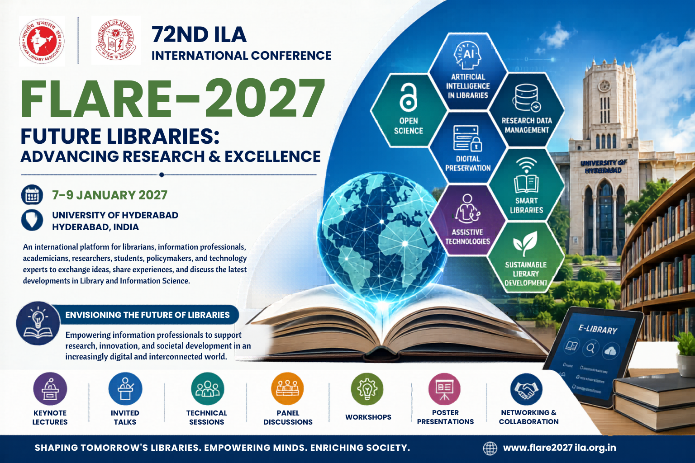

72nd ILA International Conference
Future Libraries: Advancing Research & Excellence (FLARE-2027)
7–9 January 2027
University of Hyderabad
7–9 January 2027
University of Hyderabad
The Indian Library Association (ILA), in collaboration with the University of Hyderabad, is organizing the 72nd ILA International Conference on Future Libraries: Advancing Research & Excellence (FLARE-2027). The conference aims to bring together librarians, information professionals, researchers, academicians, students, policymakers, and technology experts to discuss emerging trends and innovations in library and information science.
The event will feature keynote lectures, invited talks, paper presentations, workshops, and networking opportunities focusing on Artificial Intelligence, Smart Libraries, Open Science, Research Data Management, Digital Preservation, Sustainable Development, and future-ready library services.
Read More